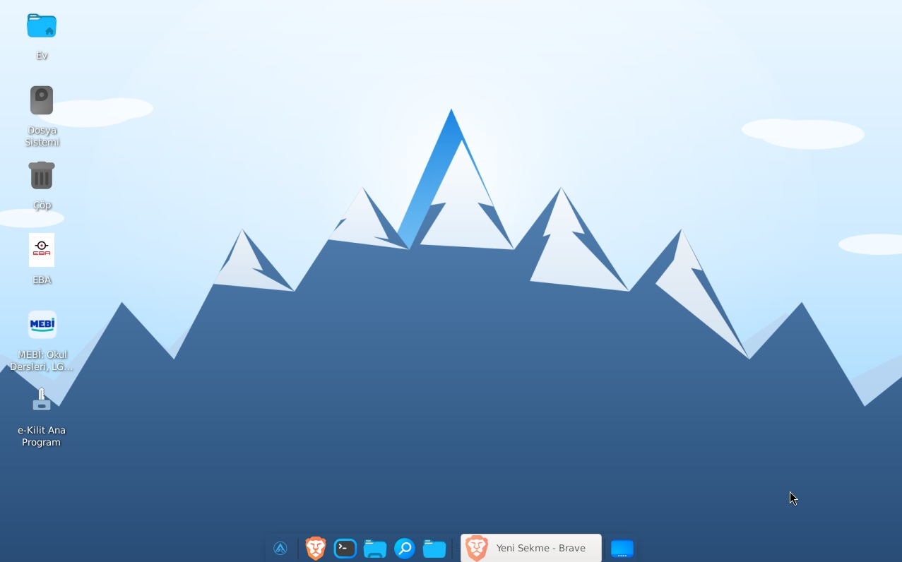

Okul Sürümü, laboratuvarlardaki yaşlı kasalar ve duvardaki Faz etkileşimli tahtalar için hazırlandı: hafif XFCE masaüstü, kalem ve dokunmatik desteği, kilitli öğrenci profili ve tek imajdan toplu kurulum.
ayazdeokul.png)
Animasyonsuz, az bellekli XFCE; 10 yaşındaki laboratuvar kasasında bile akıcı açılır, derslikte bekletmez.
Faz etkileşimli tahtalarda kalem ve dokunmatik desteği; büyük hedefler, tahta modunda sade panel.
Oturum kapanınca masaüstü sıfırlanır. Öğrenci ayar bozamaz, bir sonraki derse temiz masa gelir.
Öğretmen makinesinde hazırlanan imaj tüm laboratuvara klonlanır. 30 bilgisayar, tek teneffüs.
Tarayıcı, ofis seti, PDF okuyucu ve çevrimdışı kaynaklar kurulu gelir; internet kesilse ders durmaz.
SysVinit şeffaflığı, atomik güncelleme ve GPL-3.0 açıklığı okul sürümünde de aynen var.
| Son Kullanıcı (AyazDE) | Okul (XFCE) | |
|---|---|---|
| Masaüstü | Ayaz (Rust + Tauri) | XFCE + Ankora araçları |
| İdeal yer | Ev ve ofis bilgisayarı | BT sınıfı, Faz tahta |
| Donanım | Güncel makineler | Eski laboratuvar kasaları |
| Profil | Kişisel, kalıcı | Kilitli, her oturumda sıfırlanır |
| Kurulum | Tek makineye canlı ISO | Tek imajdan toplu klonlama |
| Taban | Devuan • SysVinit • Debian deposu • Türkçe • GPL-3.0 | |
Laboratuvar ve tahta donanımları yaşlı ve çeşitli. XFCE az kaynakla her makinede aynı hızda çalışır; Ankora araçları (mağaza, güncelleyici, AI asistanı) üstte aynen durur.
Evet. Kalem ve dokunmatik girişler standart sürücülerle tanınır; tahta modunda panel sadeleşir, dokunma hedefleri büyür.
Hayır. Bir makinede hazırlanan imaj klonlanır; sınıf bir teneffüste kurulur. Güncellemeler atomik adımlarla, yarıda kalmaz.
Oturum kapanınca profil sıfırlanır. Sistem dosyaları kilitli profille korunur; bir sonraki ders temiz başlar.
Okul sürümü hazırlanıyor; çıkış duyurusu forumda yapılacak.